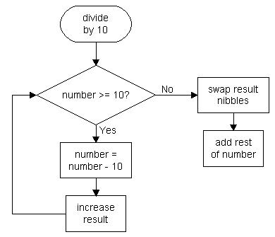

Binary coded decimal is a number format useful for storing single decimal numbers without converting them to ASCII and therefore needing more space. It's actually a step of the conversion from int to ASCII coded decimal and similar to the hex format:
22 converted to BCD (binary coded decimal) is 0x22.
Numbers greater than 99 can't be converted to BCD if only one byte is to be used as the result. 100 needs one more byte and would be converted to 0x0100 (256).
For the conversion, the algorithm of the int to ASCII coded decimal conversion is used, but some more coding is to be done because the number is packed into one byte if it had two digits before.

Example: 45->BCD
45 divided by 10 is 4; 5 remains. 4 Is stored in the result register and the nibbles are swapped. The result is now 0x40. Now 5 is added and the result is 0x45, which is exactly the result we want.
Solving the problem that occurs when converting numbers >99 is up to you. A second byte is needed.